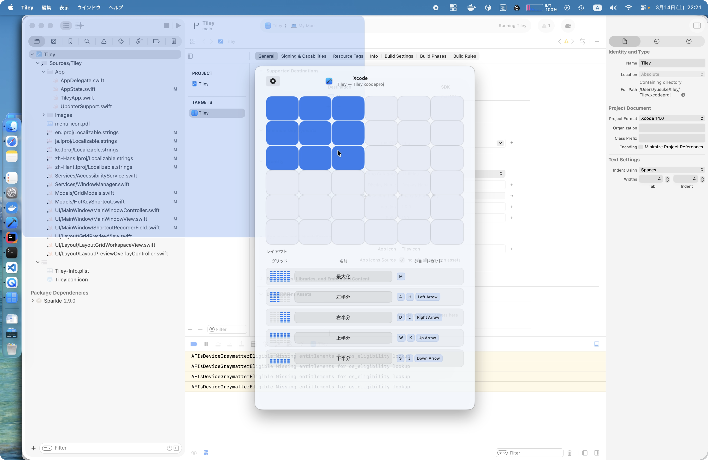

Tiley
ウインドウを手軽に整列する無料のmacOSユーティリティ。
グリッドをドラッグして、配置するだけ。
ウインドウを手軽に整列する無料のmacOSユーティリティ。
グリッドをドラッグして、配置するだけ。

グリッド上の領域を選択してウインドウを配置します。
カスタマイズ可能なグリッドが画面上に表示されます。ドラッグしてウインドウを配置する領域を選択します。
カスタマイズ可能なキーボードショートカットで、グリッドの表示やレイアウトプリセットの適用を即座に行えます。
左半分、右半分、最大化など、よく使うレイアウトを保存し、ワンステップで適用できます。
SwiftとAppKitでApple Silicon向けにネイティブビルド。高速・軽量で、Macに最適化されています。
行数、列数、セル間の間隔を調整して、ワークフローとディスプレイ設定に合わせられます。
Sparkleによるアップデート確認機能を内蔵。常に最新バージョンを自動的に維持します。
グローバルショートカットを押すか、メニューバーアイコンをクリックしてレイアウトグリッドを表示します。
グリッドのセルをドラッグして、ウインドウを配置する領域を定義します。
最前面のウインドウが選択した領域に合わせて即座に移動・リサイズされます。
キー操作一つでグリッドオーバーレイを表示。
TileyはmacOS 14（Sonoma）以降に対応しています。
macOSでは、他のアプリケーションのウインドウを移動・リサイズするためにアクセシビリティ権限が必要です。Tileyはウインドウ管理のためだけにアクセシビリティAPIを使用しており、データの収集は行いません。
はい。メニューバーから設定を開き、行数、列数、セル間の間隔を調整できます。
はい。各レイアウトプリセット（最大化、左半分など）に、設定画面で個別のグローバルショートカットを割り当てられます。
はい。Tileyは無料でオープンソースです。ソースコードはGitHubで公開されています。
無料、オープンソース、macOSネイティブ。
最新リリースをダウンロード